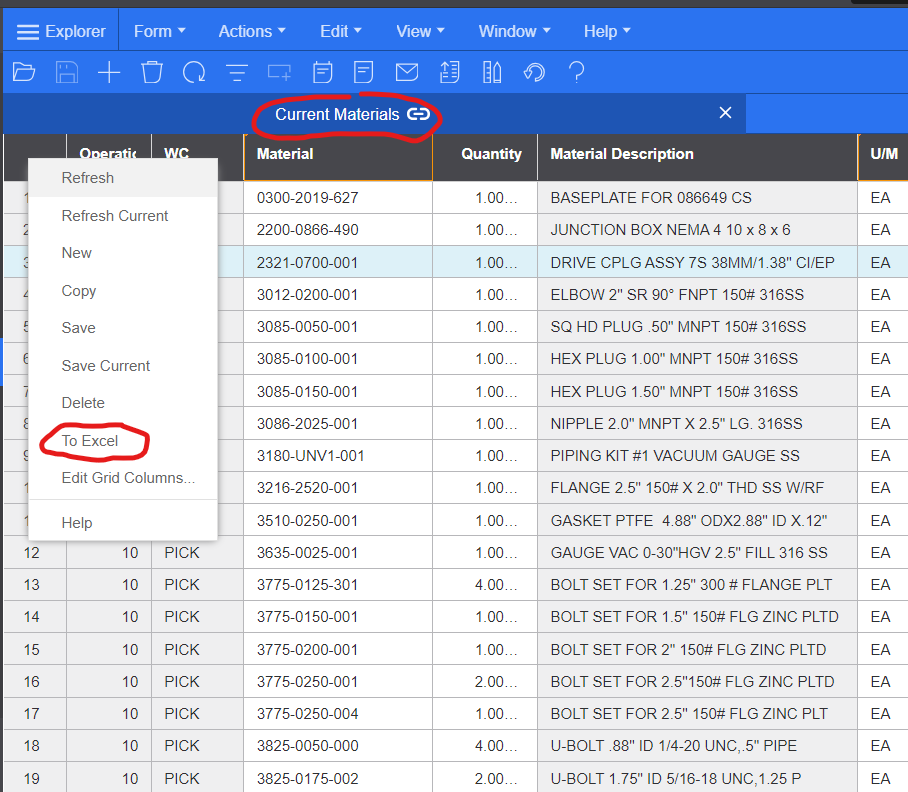
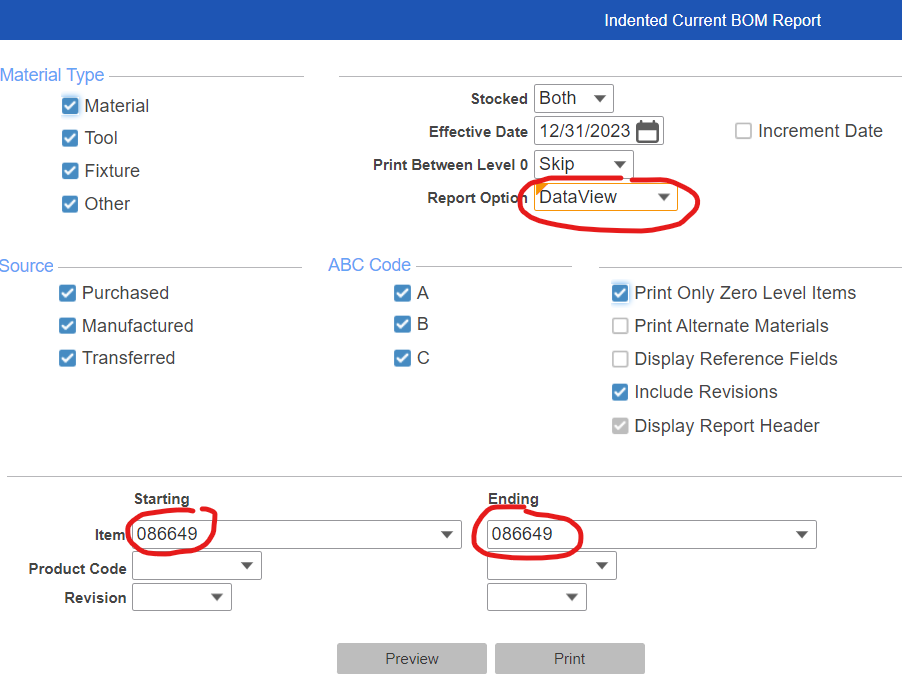
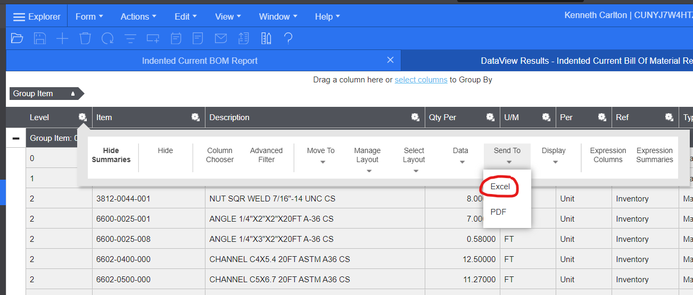
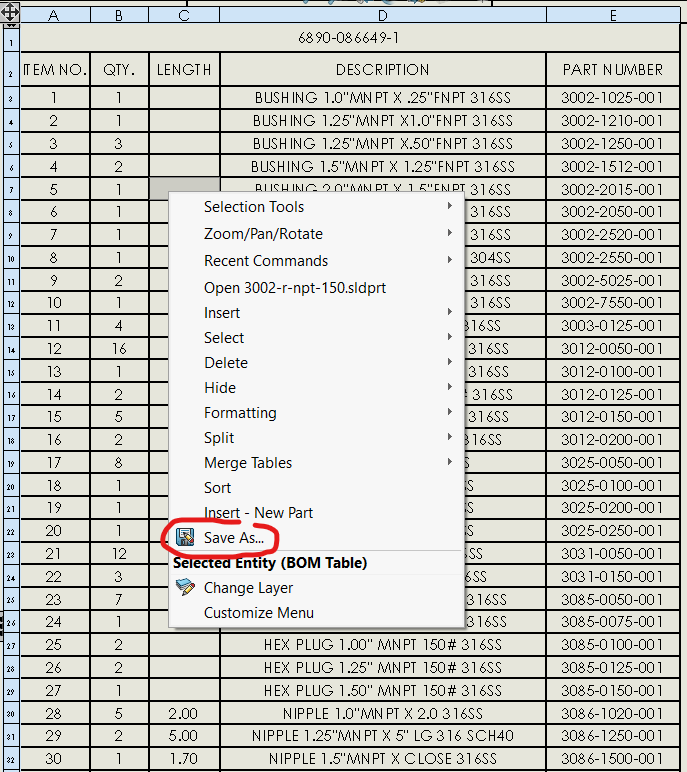
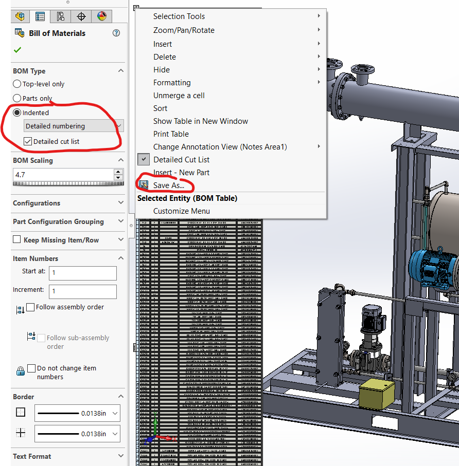

bomcheck help (section 2)
- Extract BOMs from SyteLine
- Single level SL BOMs
- Multilevel SL BOMs (preferred)
- Extract BOMs from SolidWorks
- Single level SW BOMs
- Multilevel SW BOMs (preferred)
1a. Single level SL BOMs
To extract a single level BOM from SyteLine, go to the Item, go to
Current Materials, right click on the BOM and pick
To Excel

1b. Multilevel level SL BOMs (preferred)
Extracting a multilevel BOM from SyteLine requires two steps. First go to
Indented Current BOM Report, enter the Item no., pick
Report
Option > DataView, then click
Preview.

Second, from the window
that pops up, click the gear icon and then choose
Send To > Excel.

2a. Single level SW BOMs
To extract a single level BOM from SolidWorks, open up the drawing where
your BOM is located, right click on the BOM, and pick
Save As...

2b. Multilevel level SW BOMs (preferred)
To extract a multilevel BOM from SolidWorks, open up the assembly model and
insert a BOM in it. Make sure the BOM type is
Indented, Detailed numbering,
and Detailed cut list. I.e. make sure all are activated. Then right
click on the BOM and pick
Save As...
